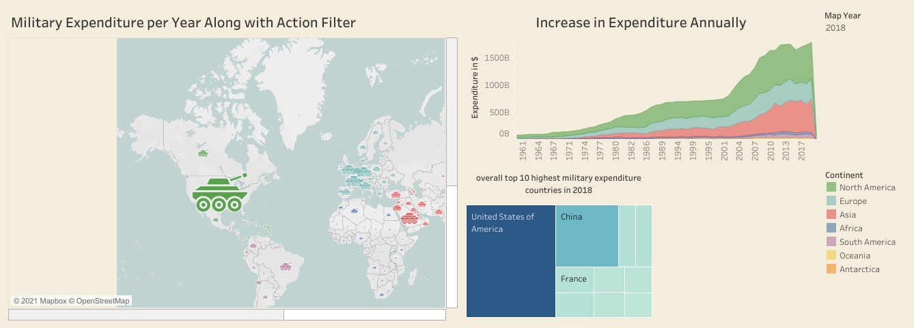
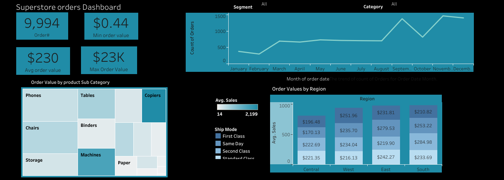
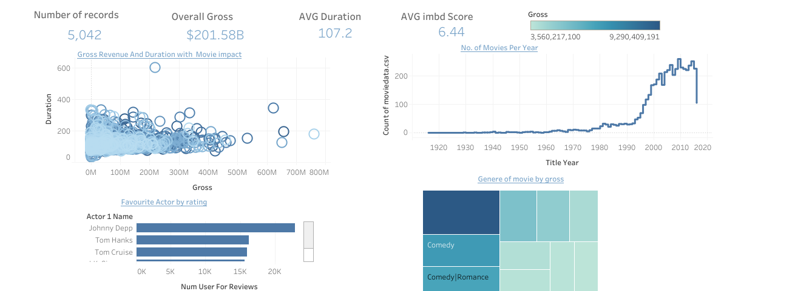

Military Expenditure from 1960 to 2018

In this project, I took the historical data of the military expenditure of all the countries from 1960 to 2018, continent wise and so on. Made a simple dashboard which shows the highest military expenditure countries on the map with a military tank icon and the big it is the highest expenditure it indicates. Along with that, there is also a bar graph showing the top 10 countries in 2018. The conclusion is that USA and several Asian and European countries have increased their expenditure overall. The dashboard also inculdes a interactive filter and action filter in the map.
Global superstore Dashboard

In this project, I took data of global superstore, and analysed and created a dashboard. For KPIs, I found number of orders placed overall,min and max order values and Avg order values. The line chart is made to see the monthly order trend and treemap shows top 10 sub category products sold. It also includes interactive filters.

In this project, I took data of IMDB ratings from 1935 to 2016 to find and analyse KPIs. KPIs includes Average Duration of movies, Gross, Average IMDB Score, and No. of movies. Furthermore, I analysed Gross Revenue and Duration with movies impact, No. of movies per year, Genres of movies by Rating, and Favourite actors by Rating and Gross. It is simple and short dashboard with 4 charts.